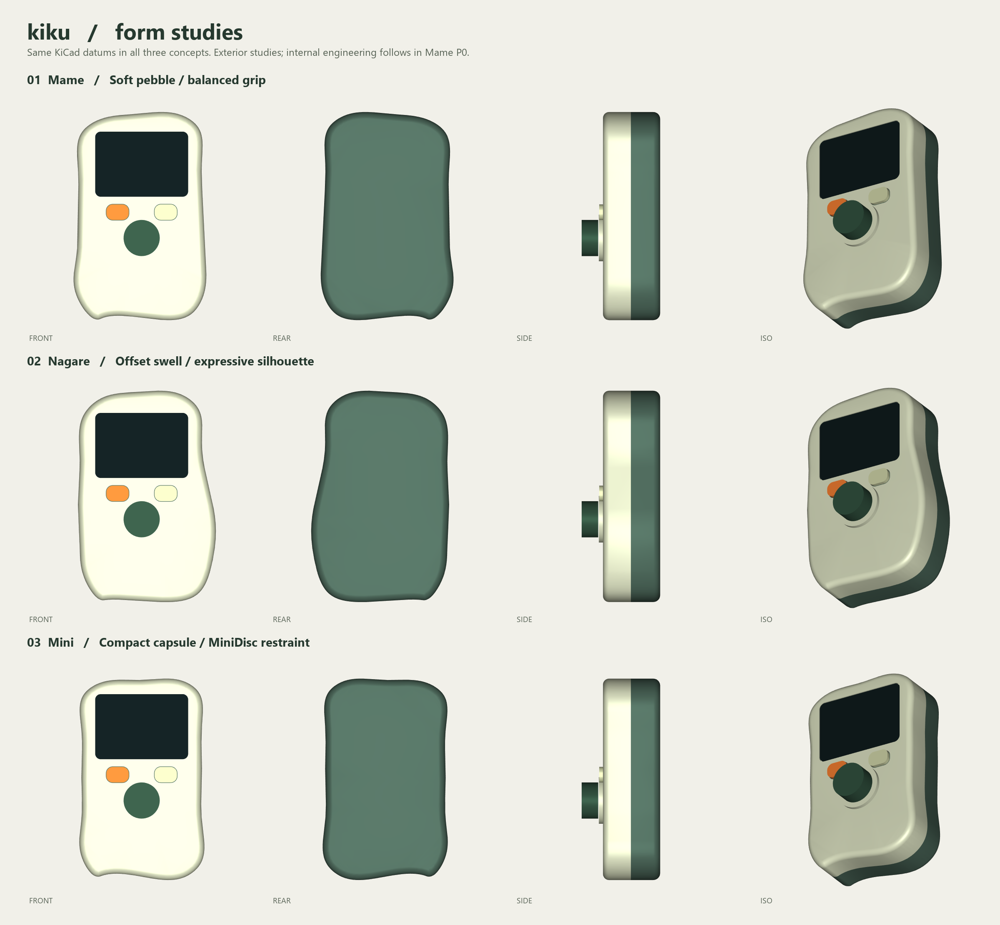

Blobject / Mechanical design / P0
Kiku. A softer kind
of music player.
Engineering development · physical fit validation pendingMame pairs a softly asymmetric ivory front with a muted green rear, a recessed smoked lens and distinct tactile controls. The existing PCB positions are retained. The selected speaker is LCSC C50387209; the battery envelope is 34 × 50 × 10 mm.
77.1 × 120.9 × 46.8 mmApprox. width × height × depth including knob
1.8 mmNominal shell wall
8 partsIndividual prototype STL exports
Three interpretations
Front, rear, profile and perspective studies. Mame was selected for its balance of character, grip and assembly space; the alternatives and scoring are documented in the report.

The developed assembly
Verification and next physical checks
The current geometric review found no overlaps in its screened rigid-part pairs or the explicit connector/FPC corridors. All eight STL meshes are watertight with consistent winding. Discrete control positions and added fasteners are checked separately. Surface screening does not certify minimum clearance, full containment or tolerance stacks.
Confirm the real display tail fold, switch actuation and return, purchased inserts, battery lead exit, speaker tab and sealing, FM antenna installation and RF performance before committing to use or tooling. SW1/QON is internal in this version. The report identifies the remaining moulding changes.